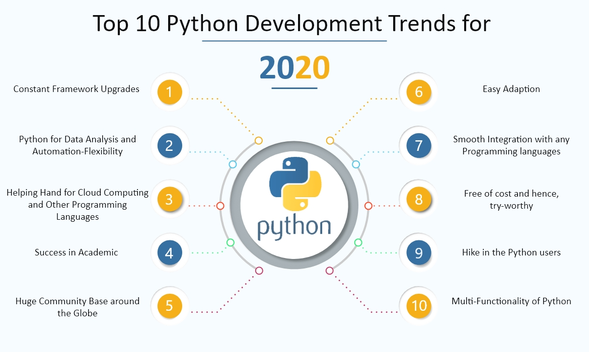

In technical terms, Python is an object-oriented, high-level programming language with integrated dynamic semantics primarily for web and app development. It is extremely attractive in the field of Rapid Application Development because it offers dynamic typing and dynamic binding options.
Python is a general-purpose programming language, which is another way to say that it can be used for nearly everything. Most importantly, it is an interpreted language, which means that the written code is not actually translated to a computer-readable format at runtime. Whereas, most programming languages do this conversion before the program is even run. This type of language is also referred to as a “scripting language” because it was initially meant to be used for trivial projects.
Python was conceived in the late 1980s by Guido van Rossum at Centrum Wiskunde & Informatica (CWI) in the Netherlands as a successor to ABC programming language, which was inspired by SETL, capable of exception handling and interfacing with the Amoeba operating system. Its implementation began in December 1989.
